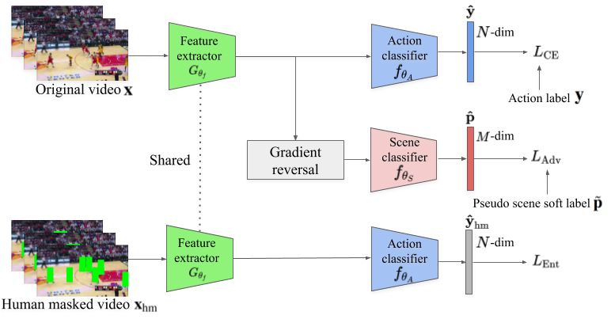

Shuffle and Attend: Video Domain Adaptation
1min introduction
Full video
Abstract
We address the problem of domain adaptation in videos for the task of human action recognition. Inspired by image-based domain adaptation, we can perform video adaptation by aligning the features of frames or clips of source and target videos. However, equally aligning all clips is sub-optimal as not all clips are informative for the task. As the first novelty, we propose an attention mechanism which focuses on more discriminative clips and directly optimizes for video-level (\cf clip-level) alignment. As the backgrounds are often very different between source and target, the source background-corrupted model adapts poorly to target domain videos. To alleviate this, as a second novelty, we propose to use the clip order prediction as an auxiliary task. The clip order prediction loss, when combined with domain adversarial loss, encourages learning of representations which focus on the humans and objects involved in the actions, rather than the uninformative and widely differing (between source and target) backgrounds. We empirically show that both components contribute positively towards adaptation performance. We report state-of-the-art performances on two out of three challenging public benchmarks, two based on the UCF and HMDB datasets, and one on Kinetics to NEC-Drone datasets. We also support the intuitions and the results with qualitative results.
Citation
Jinwoo Choi, Gaurav Sharma, Samuel Schulter, Jia-Bin Huang, "Shuffle and Attend: Video Domain Adaptation", in Proceedings of European Conference on Computer Vision (ECCV), 2020.
Bibtex
@inproceedings{Choi-ECCV-2020,
author = {Choi, Jinwoo and Sharma, Gaurav and Schulter, Samuel and Huang, Jia-Bin},
title = {Shuffle and Attend: Video Domain Adaptation},
booktitle = {ECCV},
year = {2020}
}
Download

Overview

Results

References
- • Yang Wang and Minh Hoai, “Pulling actions out of context: Explicit separation for effective combination”, In CVPR, 2018.
- • Yingwei Li, Yi Li, and Nuno Vasconcelos, “Resound: Towards action recognition without representation bias.”, In ECCV, 2018.
- • Limin Wang, Yuanjun Xiong, Zhe Wang, Yu Qiao, Dahua Lin, Xiaoou Tang, and Luc Val Gool, “Temporal segment networks: Towards good practices for deep action recognition.”, In ECCV, 2016.
- • Kensho Hara, Hirokatsu Kataoka, and Yutaka Satoh, “Can spatiotemporal 3d cnns retrace the history of 2d cnns and imagenet?”, In CVPR, 2018.
- • Yu-Wei Chao, Sudheendra Vijayanarasimhan, Bryan Seybold, David A. Ross, Jia Deng, and Rahul Sukthankar, “Rethinking the faster r-cnn architecture for temporal action localization”, In CVPR, 2018.
- • Yue Zhao, Yuanjun Xiong, Limin Wang, Zhirong Wu, Xiaoou Tang, and Dahua Lin, “Temporal action detection with structured segment networks”, In ICCV, 2017.
- • Huijuan Xu, Abir Das, and Kate Saenko, “R-C3D: Region convolutional 3d network for temporal activity detection”, In ICCV, 2017.
- • Zheng Shou, Jonathan Chan, Alireza Zareian, Kazuyuki Miyazawa, and Shih-Fu Chang, “Cdc: Convolutional-de-convolutional networks for precise temporal action localization in untrimmed videos”, In CVPR, 2017.
- • Vicky Kalogeiton, Philippe Weinzaepfel, Vittorio Ferrari, and Cordelia Schmid, “Action tubelet detector for spatio-temporal action localization”, In ICCV, 2017.
- • Saining Xie, Chen Sun, Jonathan Huang, Zhuowen Tu, and Kevin Murphy, “Rethinking spatiotemporal feature learning for video understanding”, In ECCV, 2018.
- • Gurkirt Singh, Suman Saha, and Fabio Cuzzolin, “Online real time multiple spatiotemporal action localisa- tion and prediction on a single platform”, In ICCV, 2017.